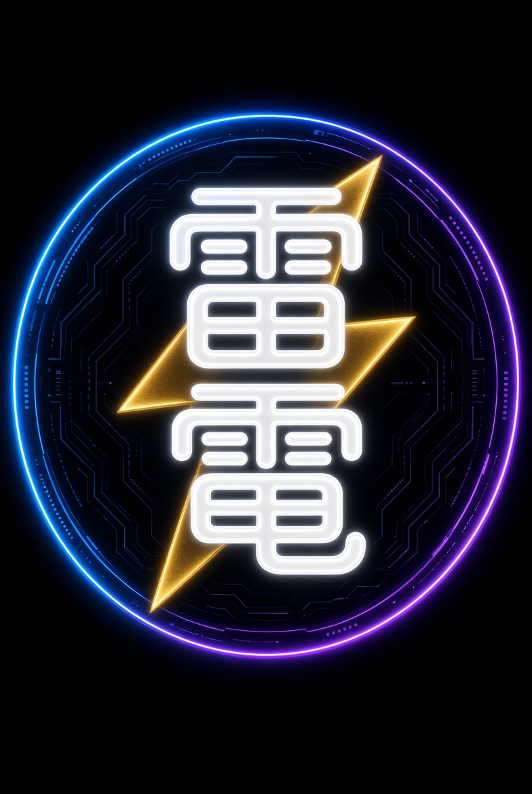
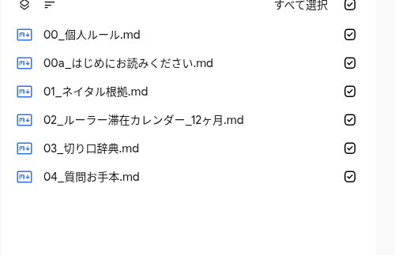
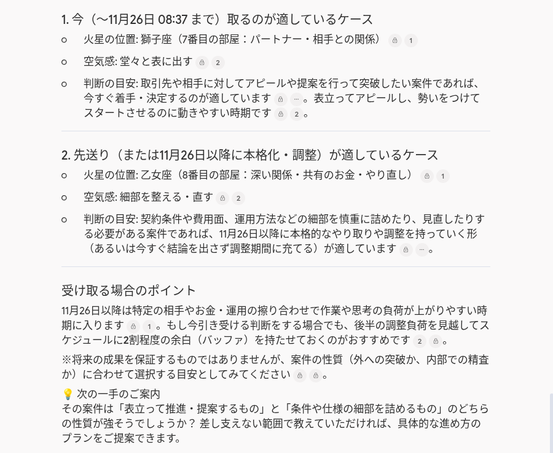

RAIDEN-AN
リアルワールドを切り抜ける、ガチンコ占星術。
設計者は会社経営者。
いいことしか言わない占いは、要らない。いいことは、ほっといても起きる。役に立つのは、厳しい見通しのほうだ。
たとえば火星で、仕事が忙しくなる時期が分かる。忙しい時期は気合でねじ伏せない。あきらめて、いつ終わるかを見通す。終わりが見えれば、耐え方を変えられる。


聞き方の型も一緒にお渡しするので、機械が苦手でもそのまま使えます。相談室での質問内容はこちら側には見えません。安心して使ってください。納品目標はお支払い・出生データ受付から24〜48時間以内。医療・法律・投資の断定はしません。厳しい見通しを出します。
¥4,980税込・買い切り
申し込む